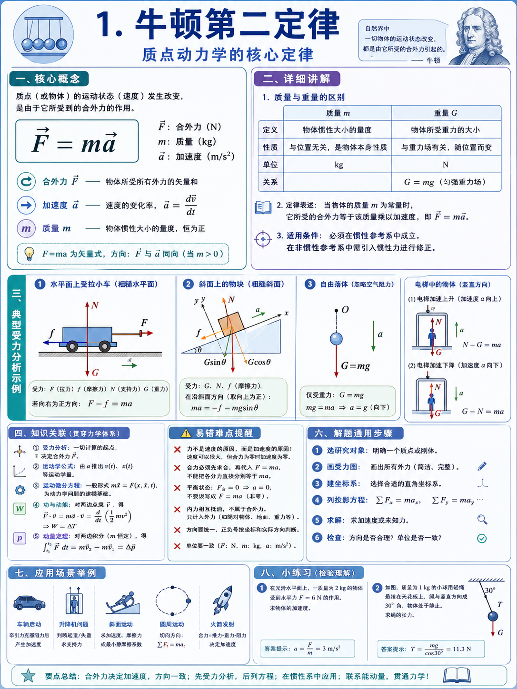

1.1
牛顿第二定律
学习目标
掌握“受力图—坐标轴—分量方程—加速度”的完整链条。能从受力判断运动，也能从加速度反推未知力。
公式拆解
- ΣF 表示合外力，不是任意一个力。
- m 是质量，体现惯性大小。
- a 是相对惯性参考系的加速度。
解题流程
- 确定研究对象，只研究一个物体或一个系统。
- 画完整受力图，所有外力不能漏。
- 选坐标轴，优先沿运动方向或约束方向。
- 列 ΣF_x=ma_x、ΣF_y=ma_y。
- 联立运动学或约束条件求未知量。
典型题型
- 斜面滑块：沿斜面、垂直斜面分解。
- 电梯问题：支持力与加速度方向相关。
- 圆周运动：法向合力提供向心加速度。
易错难点
- 把速度方向当成合力方向。
- 漏掉摩擦力或支持力。
- 研究对象不清，误把内力画进来。
考试技巧
- 看到“求加速度/求拉力/求支持力”，优先想到牛顿第二定律。
- 若加速度为 0，立即退化为静力平衡。
- 算出负值不要慌，说明实际方向与假设相反。
图文理解补充
图中方块表示研究对象，四周箭头表示作用力和加速度方向。 支持力 N 常垂直于接触面，重力 mg 始终竖直向下，摩擦力则与相对运动趋势相反。
巩固小练习
题目： 质量 5 kg 的物体受水平合力 15 N，求加速度。 提示： 直接套用 a=ΣF/m。 参考答案： a=15/5=3 m/s²，方向与合力相同。
一句话：牛顿第二定律不是单独记公式，而是把受力分析和运动学加速度连成一条解题链。
模块配图
